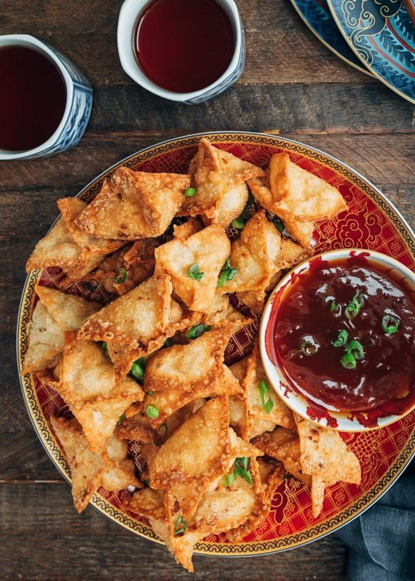
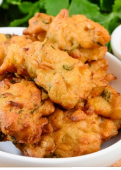
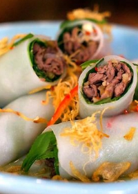
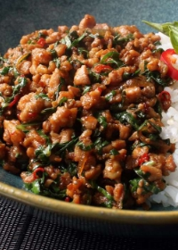
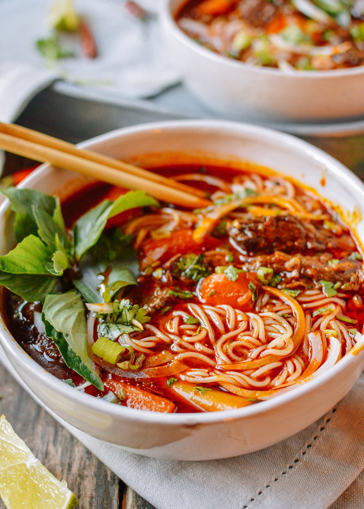
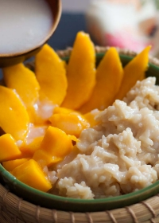
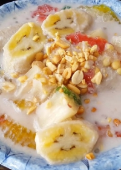
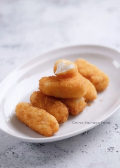

The Menu
S̄wạs̄dī, Nǐ hǎo, Xin chào

₱179.00
Crab Rangoon
A delicious appetizer made with a mixture of crab meat, cream cheese, and a variety of seasonings, wrapped in wonton wrappers and deep-fried to perfection. These crispy and creamy morsels are perfect for any occasion and are sure to be a crowd-pleaser. Each bite is bursting with rich and savory flavors, making them the perfect appetizer to start off any meal.

₱95.00
Thai Corn Fritters
A traditional street food made with sweet corn and flour, deep-fried and seasoned with authentic Thai herbs and spices. Perfect as a snack or an appetizer, these crispy and flavorful fritters are a must-try for anyone looking for a taste of authentic Thai cuisine.

₱199.00
Pho Rolls
A fusion dish that combines the classic flavors of Pho with the convenience of a roll. Made with rice noodles, tender beef or chicken, and a variety of fresh herbs and vegetables, these rolls are the perfect combination of flavor and convenience. They are also a gluten-free option, making it a great alternative for people with dietary restrictions. Perfect as a snack, lunch or dinner, enjoy the taste of Pho in a new and convenient way..

₱399.00
Pad Krapow Gai
A traditional Thai dish made with stir-fried ground chicken, chili, garlic, and holy basil. It's a simple yet flavorful dish that packs a punch with its spicy and savory taste. Served with steamed rice, this dish is perfect for those who love spicy food and want to experience a taste of Thai cuisine. Perfect for any meal and a great option for those looking for a spicy and delicious dish.
₱599.00
Char Siu
A traditional Chinese dish made with marinated and roasted pork. The meat is flavored with a sweet and savory sauce made from soy sauce, hoisin sauce, honey, and Chinese five-spice powder. This dish is often served with steamed rice or as an ingredient in other Chinese dishes such as fried rice and noodle soups. Its tender and juicy meat, combined with the sweetness from the marinade, makes it a delicious and satisfying dish.

₱203.00
Bò Kho
A traditional Vietnamese beef stew that is simmered to perfection in a flavorful broth made with lemongrass, ginger, fish sauce, and star anise. The tender beef is cooked with carrots, potatoes, and onions, making it a hearty and comforting dish that is perfect for cold weather. It's usually served with bread or rice, making it a complete and satisfying meal. It's a perfect dish for those who love savory and fragrant flavors.

₱299.00
Khao Niaow Ma Muang
A traditional Thai dish made of sweet sticky rice, served with sliced ripe mango and a side of coconut cream. It's a perfect combination of sweet, creamy, and refreshing flavors that makes it a popular dessert in Thailand. The sweet rice is cooked with coconut milk, giving it a rich and creamy taste and the ripe mango adds a sweet and juicy contrast. This dish is perfect for those who want to try a sweet and tropical dessert.

₱499.00
Chè Chuốie
A traditional Vietnamese dessert that is made by combining glutinous rice, ripe bananas, and a variety of other ingredients such as coconut milk, sugar and sometimes mung beans or sesame seeds. The glutinous rice is cooked in a mixture of coconut milk and sugar until it becomes soft and sticky, and then the ripe bananas are added. The result is a warm and comforting dish that is both sweet and satisfying. The dish can be served warm or chilled, and it's often garnished with sesame seeds to add a nutty and crunchy texture. Chè Chuối is a must-try for anyone who is interested in exploring the rich and diverse culinary culture of Vietnam, it's a perfect way to end a meal.
